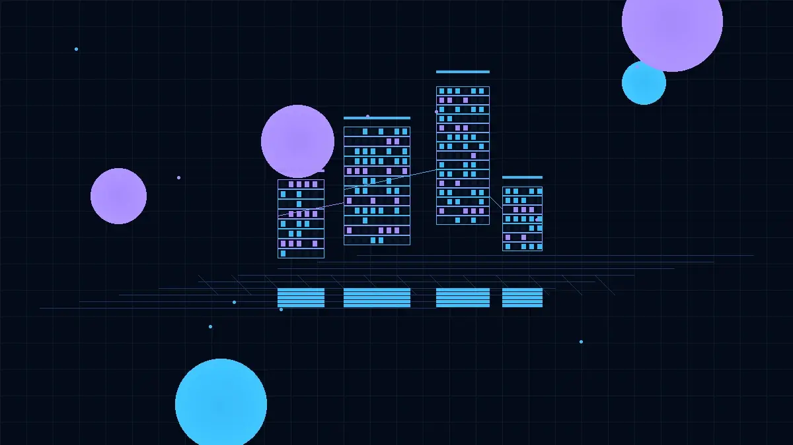
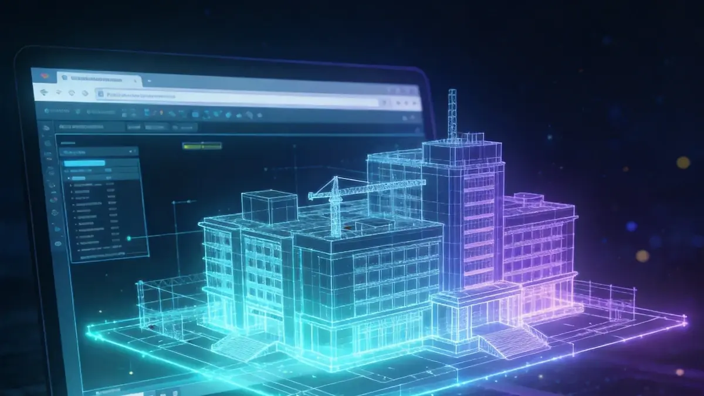
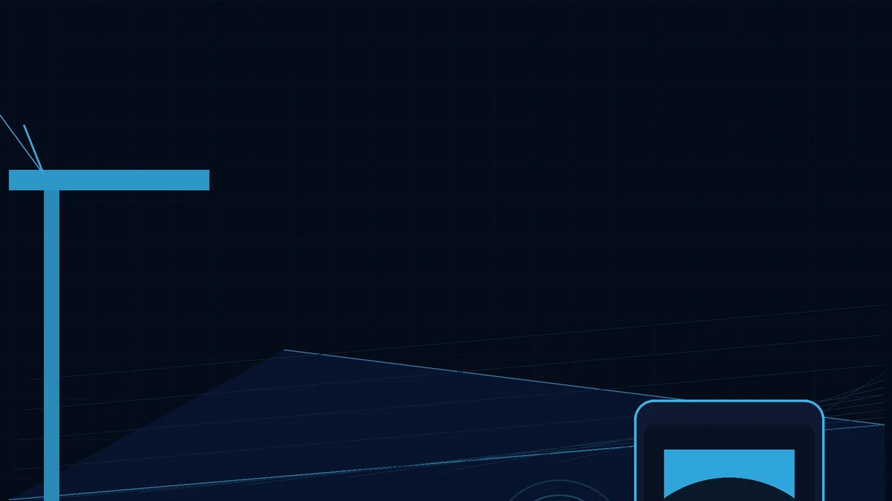
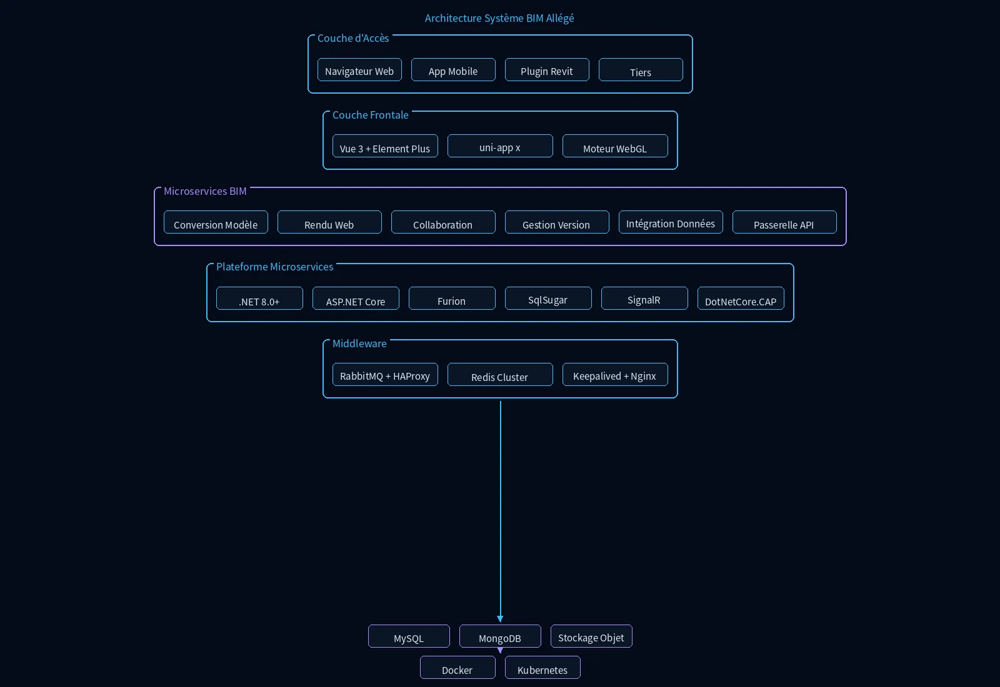

Le Système BIM Allégé convertit les modèles BIM lourds en formats web légers, permettant la collaboration multidisciplinaire et la visualisation mobile.
Fonctionnalités clés
Allègement de Modèle
Traitement automatique des modèles natifs Revit, Bentley et autres via des algorithmes de compression intelligente et d'optimisation géométrique, réduisant le volume de fichier de plus de 80% et multipliant par dix la vitesse de chargement Web, permettant une navigation fluide même des modèles ultra-lourds.
Visualisation Web
Basé sur le moteur de rendu WebGL, visualisez et interagissez avec des modèles 3D directement dans le navigateur sans aucun plug-in, avec rotation, coupes, mesures et inspection des propriétés, prêt à l'emploi.
Collaboration Multi-Parties
Prise en charge de la visualisation synchrone et des annotations collaboratives sur PC, tablette et mobile, avec synchronisation en temps réel des versions, répondant aux besoins de collaboration inter-régions des équipes de conception, entrepreneurs et maîtres d'ouvrage.
Visualisation Mobile
Visualisation et annotation de modèles sur téléphones mobiles et tablettes pour une utilisation sur site, avec mise en cache hors ligne, garantissant aux équipes de construction un accès aux données de modèle les plus récentes en tout lieu et à tout moment.
Intégration de Données
Cliquez sur n'importe quel composant pour consulter les informations de propriété techniques complètes, avec filtrage multi-conditions et export par lots, permettant une association profonde entre les données du modèle et les systèmes métier tels que progression, coûts et qualité.
Intégration API
API ouverte pour une intégration transparente avec la gestion de projet, l'OA et d'autres systèmes métier, prenant en charge les workflows personnalisés et l'échange de données pour étendre la valeur du BIM dans toute l'organisation.
Scénarios d'application

Système BIM Allégé
Le Système BIM Allégé convertit les modèles BIM lourds en formats web légers, permettant la collaboration multidisciplinaire et la visualisation mobile.

Navigation Web de Grands Modèles
Visualisation fluide de modèles BIM ultra-larges dans un navigateur sans installation de logiciel professionnel.
Revue Collaborative Multi-Parties
Parties conception, construction et supervision réalisant annotations, commentaires et suivi de problèmes en ligne.

Vérification Mobile sur Site
Ingénieurs utilisant téléphones ou tablettes pour comparer les modèles avec les conditions réelles de construction.
Avantages du système
Adapté aux maîtres d'ouvrage, entreprises générales et bureaux d'études. Support de la gestion des versions de modèles et de la comparaison des changements.
Architecture du système

Le système adopte une architecture de pipeline BIM allégé : les modèles natifs sont téléchargés via le plugin Revit, convertis en allégé par le service de conversion de modèles et stockés dans le stockage objet ; le côté Web charge et interagit en temps réel via le moteur de rendu WebGL, tandis que le côté mobile prend en charge les annotations collaboratives et la gestion des versions ; la couche inférieure repose sur une plateforme de microservices .NET 8.0+, RabbitMQ pilote les événements asynchrones, Redis met en cache les index de modèles fréquents, MySQL/MongoDB portent respectivement les données métier et les métadonnées de version, et Docker+Kubernetes assurent le déploiement élastique.